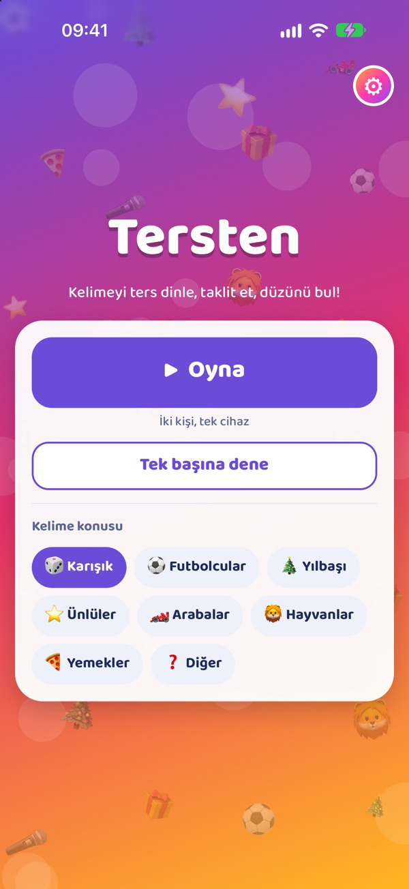
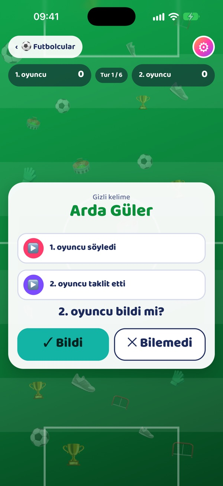
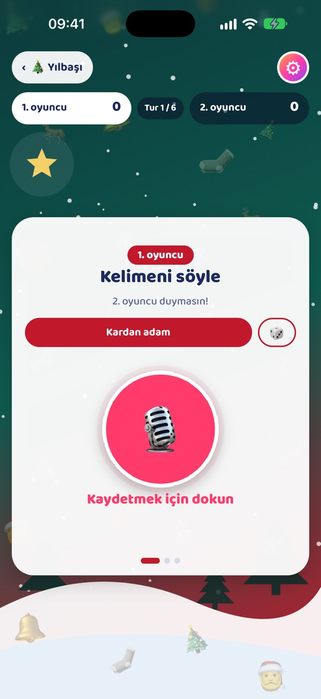
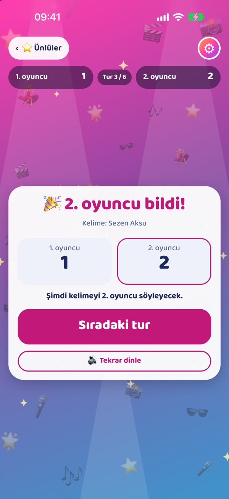
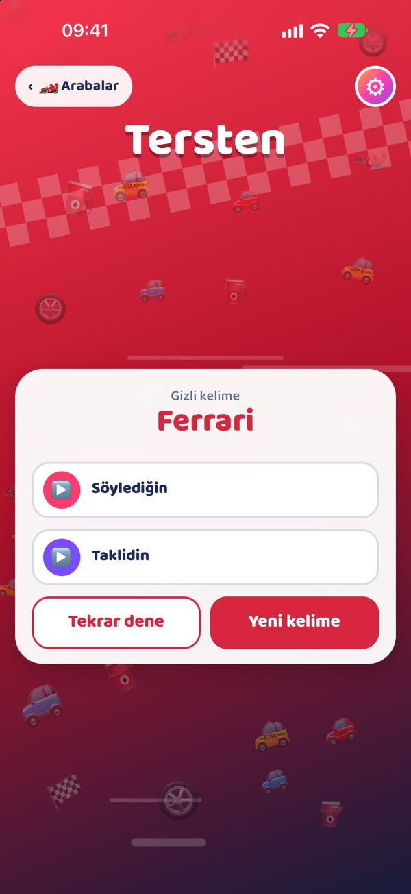
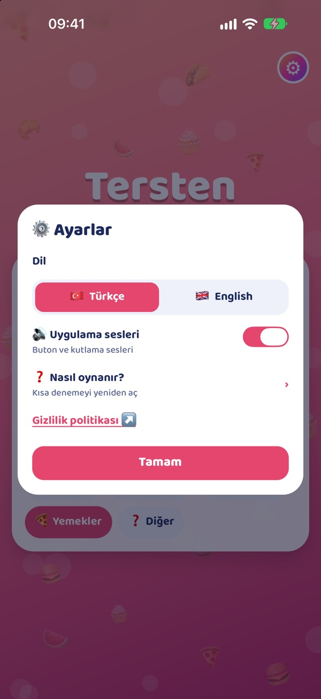

Tersten
Kelimeyi tersten dinlediğin, aynen taklit ettiğin, sonra taklidini düze çevirip aslında ne dediğini bulduğun parti oyunu.


Nasıl oynanır
İki oyuncu, tek iPhone ya da iPad, bol kahkaha. Bir tur yaklaşık bir dakika sürer, bir maç altı turdur.
Kelimeni kaydet
Oyunculardan biri bir kelime seçer (ya da fikir için Kelime öner'e basar) ve diğeri duymadan kaydeder.
Tersini taklit et
Diğer oyuncu Dinle'ye basıp kelimeyi tersten dinler; istediği kadar, isterse yavaşlatarak dinleyebilir. Sonra Kaydet'e basıp duyduğu tuhaf sesi taklit eder.
Düze çevir, tahmin et
Uygulama taklidi düze çevirir ve hemen çalar. Kelimeyi tahmin et, cevabı aç, bildiysen puanı al. Sonra roller değişir.
Yedi konu, ya da hepsi karışık
Oyna'ya basıp Karışık ile hemen başla ya da önce bir konu seç. Her konunun kendi duvar kağıdı, sesleri ve kelime önerileri var. Türkçe ya da İngilizce.
Bir göz at
Ekranları kaydırarak gez.





Oyun geceleri için
Altı tur, tek kazanan
Uygulama skoru tutar ve her tur rolleri değiştirir. İstersen oyuncu adlarını yaz.
Tek başına oyna
Yanında kimse yok mu? Bir kelime söyle, tersini taklit et ve ne kadar benzediğini dinle.
Yavaş dinleme
Ters kelimeyi yavaş çal, her sesi yakala.
Sesin cihazında kalır
Kayıtlar cihazda ters çevrilir ve oyun bitince silinir. Hiçbir şey yüklenmez.
Türkçe ve İngilizce
Dili Ayarlar'dan değiştir. Kelime önerileri seçtiğin dile göre gelir.
Temaya özel sesler
Hakem düdüğü, kızak çıngırakları, korna… İstediğin zaman kapatabilirsin.
Anında kayıt
Kayıt, dokunduğun anda başlar; kelimenin başı kesilmez.
iPhone ve iPad
iPhone'da her adımda tek büyük buton; iPad'de dikeyde ve yatayda daha büyük, iPad için tasarlanmış yerleşim.